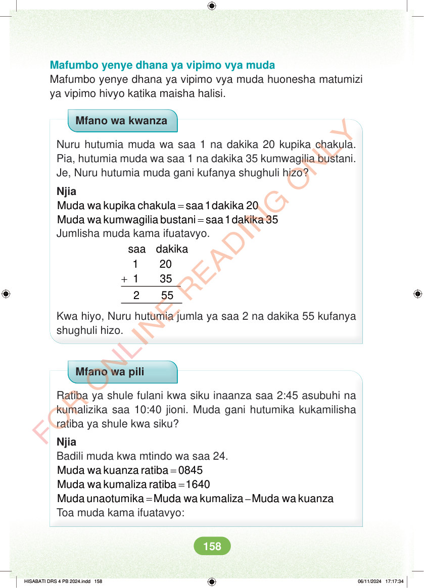

Mafumbo yenye dhana ya vipimo vya muda Mafumbo yenye dhana ya vipimo vya muda huonesha matumizi ya vipimo hivyo katika maisha halisi. Mfano wa kwanza Nuru hutumia muda wa saa 1 na dakika 20 kupika chakula. Pia, hutumia muda wa saa 1 na dakika 35 kumwagilia bustani. Je, Nuru hutumia muda gani kufanya shughuli hizo? Njia = Muda wa kupika chakula saa 1 dakika 20 = Muda wa kumwagilia bustani saa 1 dakika 35 Jumlisha muda kama ifuatavyo. + saa dakika 1 20 1 35 2 55 Kwa hiyo, Nuru hutumia jumla ya saa 2 na dakika 55 kufanya shughuli hizo. Mfano wa pili Ratiba ya shule fulani kwa siku inaanza saa 2:45 asubuhi na kumalizika saa 10:40 jioni. Muda gani hutumika kukamilisha ratiba ya shule kwa siku? Njia Badili muda kwa mtindo wa saa 24. = Muda wa kuanza ratiba 0845 = Muda wa kumaliza ratiba 1640 – = Muda unaotumika Muda wa kumaliza Muda wa kuanza Toa muda kama ifuatavyo: HISABATI DRS 4 PB 2024.indd 158 HISABATI DRS 4 PB 2024.indd 158 06/11/2024 17:17:34 06/11/2024 17:17:34